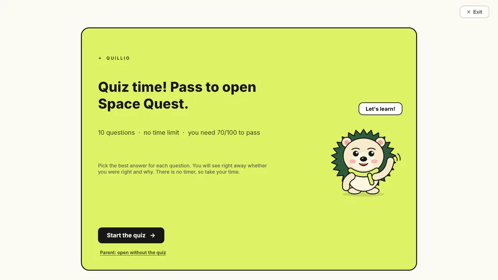
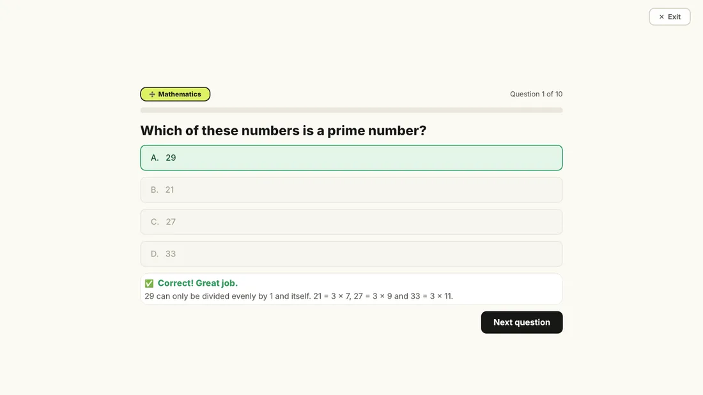
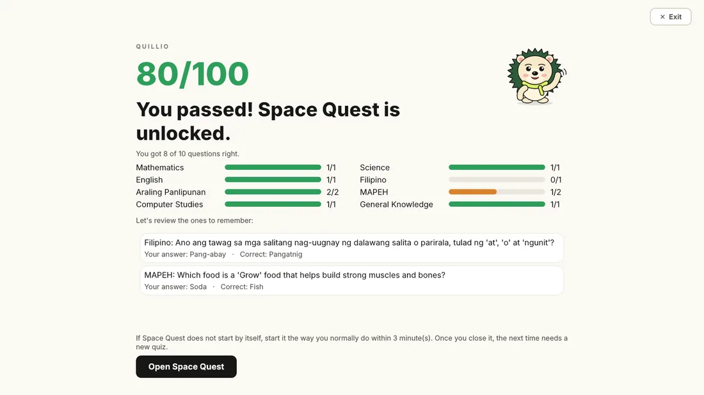
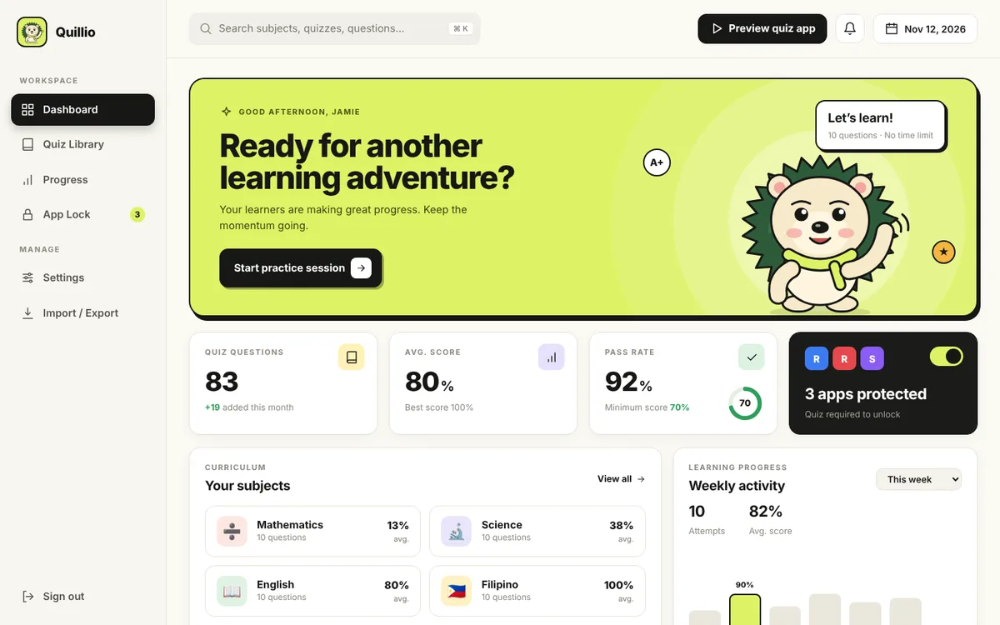

Learn Your Way In.
Quillio is a free quiz and assessment app for Mac and Windows. Write your own questions, choose the subjects, set how many questions and what score passes. Use it for practice, or put a quiz in front of any app so it opens only after a pass.
Free to download. Works offline. No account.
Say hi. Poke the hedgehog.
How it works
The app gate is optional. It runs quietly in the background and only does something when an app on your list starts.
Space Quest
A game you can play with friends
Play


Open it again and the exam comes back.
Real screenshot of the exam window. The game page here is only an illustration.
- 10questions per exam (default)
- 8starter subjects
- 80starter questions
- 70to pass (default)
- 0accounts needed
What it solves
Pick a card to see how Quillio handles it.
Try the exam
Three sample questions. Get two right to unlock the pretend game. The real exam has ten and needs 70 out of 100.
Which of these numbers is a prime number?
Watch it work
The real exam and the real parent dashboard, recorded start to finish in 95 seconds. Use the chapters to jump around.
Download and set up
Install it on the computer where the guarded apps are used. The install takes a few minutes and needs the internet once. After that it works offline.
Quillio for Mac
macOS 12 (Monterey) or newer. Intel and Apple silicon. Installs about 450 MB of packages the first time.
Download for MacQuillio-Installer.pkg540 KB
- Open the file. On your Mac, double-click
Quillio-Installer.pkgin Downloads. macOS says it "could not verify" it because the installer is not signed with an Apple developer certificate. Click Done. - Allow it once. Open System Settings, then Privacy & Security, scroll to Security and click Open Anyway. Or, in Terminal on your Mac:
xattr -d com.apple.quarantine ~/Downloads/Quillio-Installer.pkg - Follow the wizard. Click through Welcome, Read Me, License (click Agree) and Install, then enter your Mac administrator password. Wait for the Finish screen.
- Create the admin PIN. The Quillio window opens. Choose a PIN of 4 to 32 characters. You need it for Exit, parent unlock and settings.
Install from source in Terminal instead
On your Mac, download Quillio-Source.zip (186 KB), unzip it in Downloads, then run in Terminal:
cd ~/Downloads/quillio
./install.shFor a child's Standard account, sign in as the Administrator and use the hardened install. Replace CHILDACCOUNT with the child's short account name (run ls /Users to see it):
sudo ./install.sh --system --user CHILDACCOUNTQuillio for Windows Beta
Windows 10 or 11. This version has not been tested on a real PC yet, so expect rough edges and tell us what you find. Installs about 300 MB of packages.
Download for WindowsQuillio-Setup.exe2.1 MB
- Open the file. On the Windows PC, signed in as an administrator, double-click
Quillio-Setup.exe. SmartScreen says "Windows protected your PC" because the file is not signed. Click More info, then Run anyway. - Accept the license. Tick I accept, then type the Windows user name of the account that is guarded. Other accounts, including yours, are not affected.
- Install. It downloads a private copy of Python and the packages. This takes several minutes.
- Create the admin PIN. Leave Open Quillio now ticked on the Finish page and choose your PIN in the window.
Check that it works
- Open an app on your list (Roblox is the starter app). It closes at once and the exam appears.
- Click Start the quiz and answer. Reach the pass mark and click Open. You have 3 minutes to start the app.
- Close the app. A few seconds later it is guarded again.
- Want to rehearse without closing anything? Press Preview quiz app in the dashboard.
Uninstall
Mac. Open Uninstall Quillio in Applications. Or, in Terminal from the quillio folder, run ./uninstall.sh (add sudo for a hardened install).
Windows. Open Settings, Apps, Quillio, Uninstall. It asks whether to keep your quiz data.
Your apps work normally straight away.
Parent guide
Everything is managed in the Quillio app window. Pick a task.

Read me
The plain details, including what Quillio cannot do.
What it is
A local, offline quiz and assessment app that you customize completely: your own subjects, questions, number of questions per exam and pass mark. It includes 80 starter questions (Grade 5, 8 subjects) that you can edit, delete or replace. Its optional app gate puts a full-screen exam in front of the apps you choose, and the app opens only after the pass mark is reached (70 out of 100 by default). Each guarded app can have its own rules. An Exit button closes the exam after the admin PIN is entered.
Parents manage everything in the Quillio app window. The hedgehog is happy when the exam is passed and sad when it is not.
What is in it
- Quiz. A full-screen window with multiple-choice questions (10 by default), instant feedback and no timer.
- Monitor. A background service that closes your guarded apps until the exam is passed.
- Dashboard. Questions, progress, app lock and settings in one app window.
- Storage. One database file on the computer. Nothing is sent anywhere.
Subjects: Mathematics, Science, English, Filipino, Araling Panlipunan, MAPEH, Computer Studies and General Knowledge.
Mac
- macOS 12 (Monterey) or newer.
- Internet for the install only, about 450 MB of packages.
- The installer finds Python 3.9 to 3.13, or downloads the official one if none is installed.
- Best setup: you keep the Administrator account and the child uses a Standard account.
Windows (Beta)
- Windows 10 or 11 and an administrator to run the installer.
- Internet for the install only, about 300 MB. It uses its own private copy of Python.
- It installs to
C:\Program Files\Quillioand protects the one Windows account you name. - Not yet tested on a real PC.
- 10 questions per exam by default (1 to 100), spread as evenly as possible over the enabled subjects. Each app can use another number.
- Questions seen least are picked first, so a retry rarely repeats the last exam.
- Score is correct answers divided by questions times 100, rounded down. 7 of 10 is 70 and passes. 6 of 10 is 60 and does not.
- There is no time limit.
- A failed attempt cannot open the app. The buttons are Try again, Parent: open without the quiz (PIN) and Exit (PIN).
- An exam closed with Exit shows as "Unfinished" in the history and does not count as a score.
- By default a pass lasts until the app is closed, then it locks again about 8 seconds later. Set a number of minutes (Settings, or per app) to ask for a new exam on that schedule, for example every 30 minutes.
- An app can ask for 1 to 5 exams in a row. Failing one starts the count again.
- Parent unlock lasts 30 minutes by default. Five wrong PIN attempts lock PIN entry for 5 minutes.
Quillio is a strong guard for a child, not a security boundary against a determined user. Neither macOS nor Windows lets an ordinary program truly lock another app. Quillio watches running apps and closes guarded apps when they have not been unlocked.
- Anyone with access to the protected account's Terminal or Task Manager can stop the services or edit the data. A Standard account plus the hardened Mac install makes casual attempts much harder.
- Use Apple Screen Time or Windows Family Safety as a second layer. They cannot run a quiz, but they block things Quillio cannot see.
- There is a short gap. The monitor checks about every half second, so an app may flash on screen briefly before it closes. Unsaved work in a guarded app is lost on purpose.
- On Windows, Microsoft Store apps use a different program name. Add them under App Lock while they run.
- Windows does not let a program block Alt+Tab or the Windows key, so the exam is a full-screen window on top that is raised again every second.
- The installers are not code-signed, so macOS Gatekeeper and Windows SmartScreen show a warning the first time.
Which apps are blocked?
Only the ones on your App Lock list. Roblox is there to start with. Add or remove any app, such as Minecraft, a browser or Discord. Everything else opens normally.
Can different apps have different rules?
Yes. Under App Lock, press Edit rules on an app to set its questions per exam, pass mark, unlock minutes, exams in a row and subjects. Anything left empty uses the defaults from Settings.
The Quillio window is blank on my Mac. What now?
Quillio starts its window through macOS itself and opens the dashboard in your browser if the window is ever blank. If neither works, open Terminal on the Mac and run "/Library/Application Support/AcademicHub/bin/open-window.sh", then send us the files in ~/Library/Logs/AcademicHub through the Contact form.
Does it need the internet?
Only to install. After that it works offline, and the dashboard only listens on your own computer (127.0.0.1).
Is anything uploaded?
No. Questions, scores and your PIN stay in one database file on the computer. There is no account and no cloud.
What if I forget the PIN?
On a Mac, run quillio set-pin in Terminal as the protected account to choose a new one. See the commands in the source README.
Can I use my own questions?
Yes. Add them one by one in Quiz Library, or import a JSON or CSV file in Import / Export. A bad row cancels the whole import so nothing is half-changed.
How do I pause it for a day?
Open App Lock and switch Protection off. Switch it on again when you are done.
Contact
Found a bug, need a feature, or stuck on setup? Tell us what computer you use and what you saw. Anyone can write to us, no account needed.